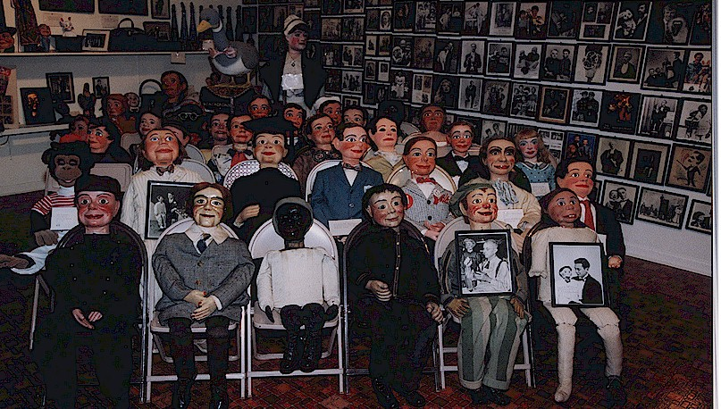

Vent Haven Museum ("vent" is lingo for "ventriloquist") just off the Interstate 75 Fort Mitchell exit in Northern Kentucky, is the world's only museum of ventriloquial figures and memorabilia. If it's ventriloquism-related, you'll find it at Vent Haven If you're a ventriliquist this may be the cultural center of your world!
The museum houses figures from many ventriloquists, but it began with a collection by William Shakespeare Berger. Berger, who was president of Cambridge Tile Co. in Cincinnati, began collecting ventriloquial figures after purchasing his first on a trip to New York.
Eventually, Berger's collection numbered 500 dummies and puppets. Today, the museum houses 800. A corner devoted to Berger's favorites includes his first purchase, Tommy Baloney, and Skinny Hamilton, Champagne Charlie, Jocko the Monkey and the Hamlet skull, which Berger used in presentations at Beechwood High School.
Visit Vent Haven
The museum does not have regular open hours. Tours of Vent Haven are by appointment only May 1 through September 30. To schedule a tour, call (859) 341-0461 and ask to speak with the curator, Lisa Sweasy. If you like, you can email Lisa and request a tour time. Groups of less than 15 need to request tours at least three days in advance. Larger groups need to allow two weeks.
The admission donation is $5 per person. The tour is guided and lasts between 45 and 90 minutes, depending on the visitors' interest and/or questions.